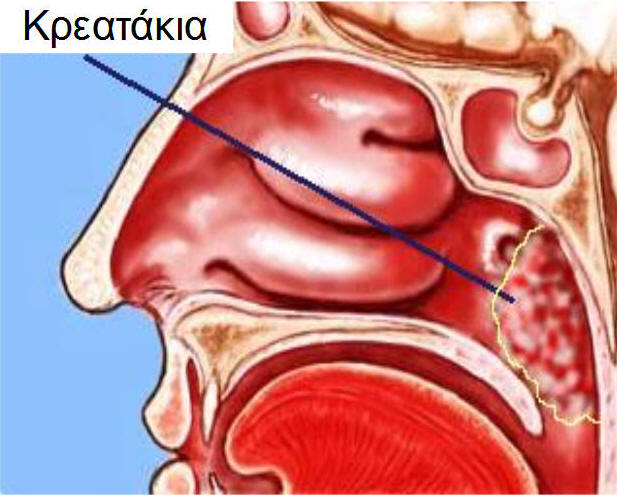
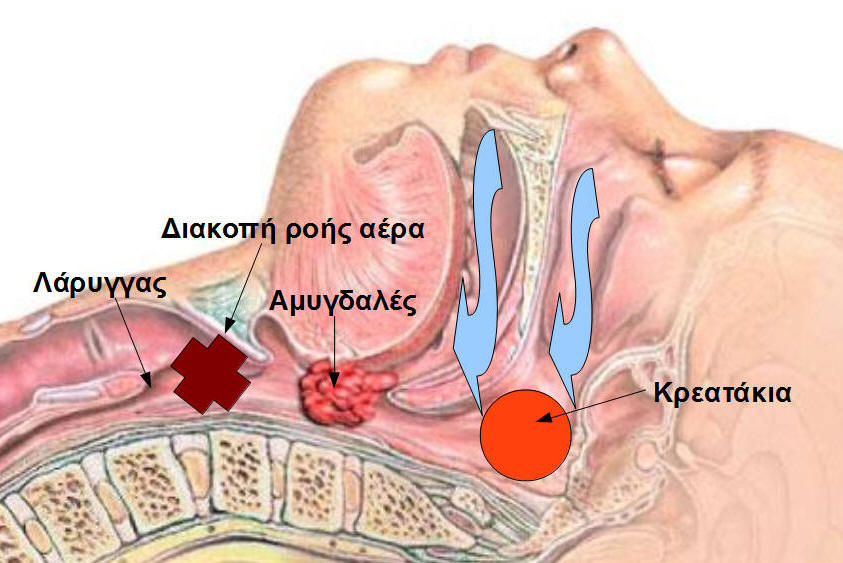
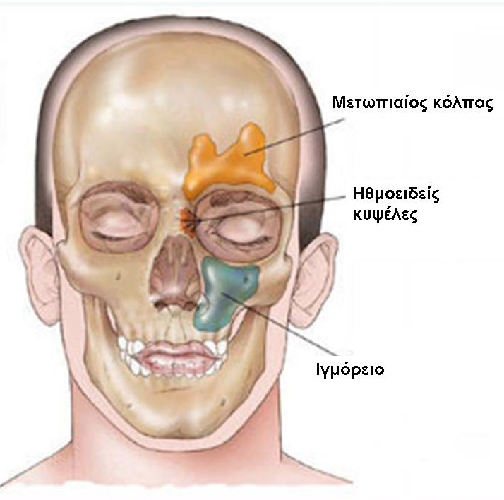

ΠαιδοΩΡΛ
Πότε πρέπει να γίνεται έλεγχος ακοής στα παιδιά;
- Ο πρώτος έλεγχος πρέπει να γίνεται τις πρώτες ημέρες της ζωής του παιδιού, συνήθως στο μαιευτήριο. Πολλοί γονείς δεν συνειδητοποιούν τη σημασία του ανιχνευτικού ελέγχου για την πρόληψη της βαρηκοΐας, γιατί δεν τους δίνονται οι κατάλληλες εξηγήσεις. Ο έλεγχος της ακοής γίνεται από εξειδικευμένους στην παιδοακουολογία ωτορινολαρυγγολόγους και όχι από τον παιδίατρο του παιδιού. Αν η διάγνωση δεν γίνει στο πρώτο τρίμηνο και η αντιμετώπιση στο πρώτο εξάμηνο (σύγχρονα επιστημονικά δεδομένα) το παιδί θα αντιμετωπίσει σοβαρά προβλήματα με την ανάπτυξη της ομιλίας. Συχνά, οι γονείς παρατηρούν ότι το βρέφος τρομάζει στο θόρυβο ή αντιδρά σε κάποιους ήχους. Πρόκειται για σοβαρό λάθος! Δε μας ενδιαφέρουν οι δυνατοί θόρυβοι, αλλά κυρίως το μωρό να ακούει τέλεια, ακόμα και τον ψίθυρο. Αυτό μόνο με αντικειμενική παιδοακουολογική εκτίμηση μπορούμε να το διαπιστώσουμε.
- Στην ηλικία των 3 περίπου ετών και έπειτα πριν την έναρξη του δημοτικού σχολείου, δηλαδή 5-6 ετών. Σε αυτές τις ηλικίες αναπτύσσονται συχνά μορφές βαρηκοΐας οφειλόμενες σε αναπνευστικά προβλήματα πχ κρεατάκια, οι οποίες δύσκολα γίνονται αντιληπτές, αλλά επηρεάζουν σημαντικά την άρθρωση, το λόγο και τη σχολική επίδοση (μαθησιακές διαταραχές). Επιπλέον, μας δίνεται η δυνατότητα να διαγνώσουμε έγκαιρα τη μονόπλευρη βαρηκοϊα.
- Μετά από κάθε επεισόδιο ωτίτιδας. Η ωτίτιδα μπορεί είτε να αφήσει υπολοιπόμενο υγρό μέσα στο αυτί, είτε να προκαλέσει εσωτερική και μόνιμη βλάβη στο μηχανισμό ακοής. Δυστυχώς, αρκετά συχνά δε δίνεται η δέουσα προσοχή από επαγγελματίες του χώρου της υγείας στην ύπαρξη υγρού πίσω από το τύμπανο.
- Σε κάθε περίπτωση καθυστέρησης ομιλίας, διαταραχής της άρθρωσης και μαθησιακών δυσκολιών.
Ο ειδικός παιδοακουολογικός έλεγχος προσαρμόζεται με βάση την ηλικία και τα προβλήματα του παιδιού. Περισσότερα δείτε στη σελίδα της παιδοακουολογίας.
Συλλογή υγρού στο αυτί (εκκριτική ωτίτιδα, βλεννώδης μέση ωτίτιδα)
Πρόκειται για συλλογή υγρού στο αυτί πίσω από το τύμπανο. Αποτελεί πολύ συχνή αιτία-ευτυχώς αναστρέψιμης βαρηκοΐας-σε παιδιά ηλικίας 2,5-6 ετών. Συνήθως προκύπτει μετά από επεισόδιο/α οξείας μέσης πυώδους ωτίτιδας (με πυρετό και έντονο πόνο στο αυτί) ή όταν έχουν υπερτραφεί τα κρεατάκια (αδενοειδείς εκβλαστήσεις), που βρίσκονται στο βάθος της μύτης.
Στην τελευταία περίπτωση τα κρεατάκια φράζουν το σωληνάκι (ευσταχιανή σάλπιγγα) από το οποίο περνά αέρας στο αυτί πίσω από το τύμπανο. Στα αρχικά στάδια αισθάνεται κανείς όπως όταν «βουλώνει» το αυτί καθώς αλλάζουμε απότομα υψόμετρο πχ με το αυτοκίνητο ή το αεροπλάνο. Όσο παρατείνεται η κατάσταση και δεν αερίζεται το αυτί αρχίζει και γεμίζει με υγρό. Το υγρό απορροφά μέρος του ήχου και προκαλεί βαρηκοΐα (αγωγιμότητας γιατί ελαττώνεται η αγωγή του ήχου).
Επειδή τις περισσότερες φορές η συλλογή υγρού γίνεται σταδιακά και τα παιδιά συνηθίζουν, δεν διαμαρτύρονται ότι δεν ακούν. Οι γονείς και οι δάσκαλοι παρατηρούν πρώτοι ότι το παιδί δεν αντιλαμβάνεται γρήγορα τι έχει ειπωθεί, ρωτά «τι-τι;», θέλει την τηλεόραση δυνατά. Στην περίπτωση, που τα κρεατάκια προκαλούν και σημαντική απόφραξη στη μύτη το παιδί μπορεί να ροχαλίζει, να κοιμάται με ανοιχτό στόμα ή να κάνει ακόμη και υπνική άπνοια. Όταν η συλλογή υγρού περνά στη φάση της χρονιότητας τότε αλλάζει η σύσταση του (γίνεται πιο παχύρρευστο-glue ear) και είναι πιο δύσκολη η αντιμετώπιση του με φάρμακα. Η διάγνωση του υγρού γίνεται με την ωτοσκόπηση και ιδιαίτερα από τους ΩΡΛ ιατρούς με την ωτοσκόπηση με μικροσκόπιο.
Υπάρχουν και περιπτώσεις στις οποίες η παρουσία υγρού πίσω από το τύμπανο προκαλεί στο παιδί αστάθεια, ζάλη ή ίλιγγο. Οι γονείς τις περισσότερες φορές παρερμηνεύουν αυτά τα συμπτώματα σαν αδεξιότητα, ενώ στην πραγματικότητα πάσχει ο λαβύρινθος του αυτιού και χρειάζεται ειδική παιδοωρλ εξέταση.
Άλλες εξετάσεις, που συμβάλλουν στη διάγνωση είναι η τυμπανομετρία και φυσικά ο παιδοακουολογικός έλεγχος (ανιχνευτική ακουομετρία, παιγνιοακουομετρία, τονική ακουομετρία). Σε κάθε περίπτωση ο θεράπων ιατρός καθοδηγεί τη θεραπευτική αντιμετώπιση, άλλοτε φαρμακευτική και άλλοτε χειρουργική. Η θεραπεία αποσκοπεί στην απομάκρυνση του υγρού και την αποκατάσταση το συντομότερο της φυσιολογικής ακοής. Με αυτό τον τρόπο εξασφαλίζεται η απρόσκοπτη ανάπτυξη του λόγου και της ομιλίας και η επαρκής συμμετοχή του παιδιού στην εκπαιδευτική διαδικασία.
Σύνδρομο υπνικής άπνοιας στα παιδιά
Άπνοια ονομάζεται η πλήρης διακοπή ροής αέρα στην αναπνευστική οδό. Το κύριο αίτιο του συνδρόμου άπνοιας κατά τη διάρκεια του ύπνου στα παιδιά (αλλά και στους ενήλικες) είναι η απόφραξη των ανώτερων αεραγωγών (μύτη, στόμα, φάρυγγας). Το κύριο αίτιο στα παιδιά είναι η υπερτροφία των αμυγδαλών και των αδενοειδών εκβλαστήσεων (κρεατάκια). Το κύριο αίτιο στους ενήλικες είναι η σκολίωση του ρινικού διαφράγματος, συχνά με μακρά σταφυλή και υπερτροφικές αμυγδαλές.Για τη σκολίωση δείτε εδώ.
Εικόνα. Τα κρεατάκια εμποδίζουν την αναπνοή από τη μύτη και σε συνδυασμό με τις μεγάλες αμυγδαλές, που εμποδίζουν την αναπνοή από το στόμα, διακόπτουν τη ροή του αέρα στο λάρυγγα και τους πνεύμονες. Η διακοπή της εισπνοής αέρα είναι η άπνοια.
α κρεατάκια βρίσκονται στο βάθος της μύτης και όταν υπερτρέφονται, συνήθως μετά από πολλά κρυολογήματα, δεν επιτρέπουν την αναπνοή από τη μύτη. Το παιδί μιλά με μπουκωμένη μύτη, έχει ανοιχτό το στόμα και μόνιμο συνάχι. Όταν υπερτραφούν και οι αμυγδαλές μέσα στο στόμα, τότε η κατάσταση χειροτερεύει. Κατά τη διάρκεια του ύπνου το παιδί κοιμάται με ανοιχτό το στόμα, ροχαλίζει και πέφτει συχνά σε κατάσταση άπνοιας. Η αναπνοή σταματά και ενώ το στήθος φαίνεται να ανεβοκατεβαίνει δεν διέρχεται αέρας από την αναπνευστική οδό. Αυτό συμβαίνει γιατί τα υπερτροφικά κρεατάκια και οι υπερτροφικές αμυγδαλές έχουν προκαλέσει απόφραξη, γι'αυτό και η άπνοια λέγεται αποφρακτική υπνική άπνοια. Καθώς το παιδί δεν αναπνέει, ελαττώνεται το οξυγόνο στο αίμα και συνεπώς και στον εγκέφαλο, οπότε κινητοποείται ένας μηχανισμός σχετικής αφύπνισης. Ο ύπνος γίνεται ανήσυχος και το παιδί δεν κοιμάται καλά, δεν ξεκουράζεται. Σε ορισμένες περιπτώσεις αναζητεί και βρίσκει μόνο του τη θέση, που το ανακουφίζει πχ. κοιμάται σχεδόν καθιστό. Αν αυτή η κατάσταση συνεχιστεί αρκετά τότε οι διαταραχές στην οξυγόνωση του αίματος μπορεί να δημιουργήσουν σοβαρά προβλήματα στην καρδιά και τους πνεύμονες και να επηρεάσουν την ανάπτυξη του παιδιού.
Ορισμένοι ειδικοί θεωρούν ότι αν εμφανίζονται ένα ή περισσότερα επεισόδια άπνοιας σε μία ώρα ύπνου, τότε η κατάσταση είναι πολύ σοβαρή. Κατά κανόνα το πρόβλημα γίνεται ιδιαίτερα αισθητό από τους ίδιους τους γονείς. Στην περίπτωση της αποφρακτικής άπνοιας, που οφείλεται σε διογκωμένες αμυγδαλές και κρεατάκια, η λύση είναι συνήθως η επέμβαση. Η ταχεία λύση του προβλήματος συχνά εντυπωσιάζει τους γονείς. Μία συχνή ερώτηση των γονιών είναι κατά πόσο χρειάζονται οι αμυγδαλές, αφού αποτελούν φίλτρο για τον οργανισμό. Σε αυτή την ερώτηση συνήθως απαντούμε ότι δεν αρκεί μόνο η ύπαρξη τους, αλλά και η σωστή τους λειτουργία. Όταν λοιπόν υπερτρέφονται και προκαλούν απόφραξη της αναπνευστικής οδού, τότε είναι σαν τον φύλακα, που αντί να σε φυλάει σε κλέβει κιόλας. Η αφαίρεση των αμυγδαλών και των αδενοειδών δε σημαίνει ότι το παιδί θα αρρωσταίνει συχνότερα, γιατί στην ίδια περιοχή του σώματος υπάρχουν πολλοί λεμφαδένες, που συμβάλλουν στην άμυνα του οργανισμού.
Πότε αφαιρούνται οι αμυγδαλές
- Σύνδρομο υπνικής άπνοιας, όπως αναφέρθηκε προηγουμένως.
- Συχνές οξείες αμυγδαλίτιδες. Σαν σημαντικό επεισόδιο οξείας αμυγδαλίτιδας θεωρούμε την ύπαρξη πυρετού πάνω από 38,3 βαθμούς Κελσίου, τη διόγκωση και κάλυψη των αμυγδαλών από πύο (λευκωπό επίχρισμα), τη διόγκωση των λεμφαδένων στον τράχηλο. Η συχνότητα των επεισοδίων θα πρέπει να είναι συνήθως τουλάχιστον τρεις φορές σε ένα χρόνο. Ο όρος συνήθως τίθεται γιατί λαμβάνουμε συχνά υπόψη και τη βαρύτητα των φλεγμονών, δηλαδή το πόσο βαριά περνάει την αμυγδαλίτιδα το παιδί. Σε κάθε περίπτωση ο θεράπων ιατρός συμβουλεύει για την αντιμετώπιση.
- Η δημιουργία περιαμυγδαλικού αποστήματος. Το περιαμυγδαλικό απόστημα είναι μία επιπλοκή της οξείας αμυγδαλίτιδας, ευτυχώς λιγότερο συχνή στη σύγχρονη εποχή των αντιβιοτικών. Δημιουργείται συλλογή πύου έξω και γύρω από την αμυγδαλή. Τα συμπτώματα είναι πολύ βαριά. Πολύ υψηλός πυρετός, ισχυρός πόνος τόσο που το παιδί αρνείται να καταπιεί και τα σάλια του τρέχουν, επώδυνη διόγκωση των λεμφαδένων στον τράχηλο. Η κατάσταση αντιμετωπίζεται με διάνοιξη και παροχέτευση του αποστήματος. Αφού αντιμετωπιστεί η κατάσταση με αντιβιοτικά, στη συνέχεια προγραμματίζεται αμυγδαλεκτομή.
- Σε ορισμένα παιδιά η διόγκωση των αμυγδαλών προκαλεί προβλήματα στην ομιλία. Τα παιδιά μιλούν σα να έχουν μια καυτή πατάτα στο στόμα (στα αγγλικά "hot potato voice"). Αν το πρόβλημα είναι μεγάλο, τότε οι αμυγδαλές αφαιρούνται.
Συρρίκνωση αμυγδαλών χωρίς να τις αφαιρούμε
Τα τελευταία χρόνια εφαρμόζονται μέθοδοι συρρίκνωσης των αμυγδαλών, χωρίς να αφαιρούνται χειρουργικά. Οι μέθοδοι αυτοί αποσκοπούν στην ελάττωση του μεγέθους των αμυγδαλών με σκοπό τη διευκόλυνση της αναπνοής και την αντιμετώπιση του ροχαλητού. Η συρρίκνωση γίνεται συνήθως με ραδιοσυχνότητες. Τα πλεονεκτήματα αυτών των μεθόδων είναι ότι διατηρούνται οι αμυγδαλές, μετεγχειρητικά δεν υπάρχουν έντονες ενοχλήσεις και ότι συνήθως δεν απαιτείται νοσηλεία. Στο ερώτημα αν η συρρίκνωση είναι καλύτερη από τη χειρουργική αφαίρεση, η απάντηση δίνεται από το θεράποντα ιατρό μετά από προσεκτική αξιολόγηση της κατάστασης και των συμπτωμάτων του παιδιού.
Ιγμορίτιδα στα παιδιά (οι ίδιοι μηχανισμοί ισχύουν και στους ενήλικες)
Το ιγμόρειο είναι μία κοιλότητα, η οποία βρίσκεται μέσα στο ζυγωματικό οστό. Εξωτερικά αντιστοιχεί στο μάγουλο, κάτω από το μάτι. Ανήκει στις παραρρίνιες κοιλότητες (ιγμόρεια, ηθμοειδείς κυψέλες, μετωπιαίοι κόλποι) οι οποίες βρίσκονται μέσα στα οστά γύρω από τη μύτη, με την οποία και επικοινωνούν και από την οποία αερίζονται. Φυσιολογικά μέσα στα ιγμόρεια παράγεται βλέννα (μύξα), η οποία προωθείται προς το εσωτερικό της μύτης μέσω του πόρου (σωληνάκι), που συνδέει το ιγμόρειο με το εσωτερικό της ρινικής κοιλότητας. Αν για κάποιο λόγο παρεμποδιστεί η ομαλή ροή της βλέννας από το ιγμόρειο, τότε η μύξα μαζεύεται μέσα σε αυτό και στη συνέχεια μολύνεται από μικρόβια, όπως βρωμίζουν τα στάσιμα νερά.
Οι δύο συχνότεροι παράγοντες, που προδιαθέτουν στη δημιουργία ιγμορίτιδας στα παιδιά, είναι οι λοιμώξεις του ανώτερου αναπνευστικού και η αλλεργική ρινίτιδα. Στην πρώτη περίπτωση συνήθως πρόκειται για ιώσεις του ανώτερου αναπνευστικού με συνάχι, φταρνίσματα, πιθανώς πονόλαιμο και πυρετό. Υπολογίζεται ότι η συμμετοχή των παιδιών στους παιδικούς σταθμούς τριπλασιάζει τον κίνδυνο για συχνές λοιμώξεις. Στις περισσότερες περιπτώσεις το απλό κρυολόγημα διαρκεί περίπου μία εβδομάδα. Αν όμως τα συμπτώματα επιμένουν πάνω από 10 ημέρες, τότε θα πρέπει να υποψιαστούμε την ανάπτυξη ιγμορίτιδας. Το συνάχι γίνεται παχύρρευστο και κιτρινοπράσινο. Το παιδί αρχίζει να βήχει και η ομιλία του να αποκτά τη χροιά του χρόνιου μπουκώματος στη μύτη. Δυνατόν να πονάει το κεφάλι ή και τα δόντια. Εκεί που φαινόταν το παιδί να ξεπερνά το αρχικό κρυολόγημα, τώρα φαίνεται να αρρωσταίνει χειρότερα. Η κατάσταση συνήθως παρατείνεται πέρα από δύο εβδομάδες. Στην περίπτωση της αλλεργικής ρινίτιδας, το αλλεργικό συνάχι και το μπούκωμα της μύτης προκαλούν απόφραξη της επικοινωνίας του ιγμορείου με τη μύτη και ξεκινούν το φαύλο κύκλο της συλλογής και μόλυνσης της μύξας και τελικά τη σειρά των συμπτωμάτων, όπως προαναφέρθηκαν.
Σε παιδιά με άσθμα η ιγμορίτιδα επιβαρύνει την κατάσταση διότι το πύον τρέχει πίσω από τη μύτη και επιβαρύνει τη λειτουργία των πνευμόνων. Η θεραπεία της ιγμορίτιδας σε αυτά τα παιδιά βελτιώνει σημαντικά και τα προβλήματα από το κατώτερο αναπνευστικό. Τα συνηθέστερα μικρόβια στην οξεία ιγμορίτιδα είναι ο στρεπτόκοκκος, ο αιμόφιλος και η μοραξέλλα. Σε χρόνιες καταστάσεις τα μικρόβια διαφοροποιούνται και μπορεί να παρατηρείται ψευδομονάδα, σταφυλόκοκκος κ.α.
Η διάγνωση τίθεται κυρίως κλινικά. Είναι ιδιαίτερα σημαντικό να διενεργείται ρινοσκόπηση. Κατά τη ρινοσκόπηση με τη βοήθεια του ρινοσκοπίου διανοίγεται το ρουθούνι και με φωτισμό εξετάζουμε το εσωτερικό της μύτης. Ιδιαίτερα παρατηρούμε την περιοχή, που το ιγμόρειο επικοινωνεί με το εσωτερικό της μύτης και στην οποία συχνά βρίσκουμε πύον. Με υπομονή και καλή συνεργασία μπορούμε να προχωρήσουμε και σε ενδοσκόπηση. Εισάγουμε στη μύτη μία λεπτή κάμερα μέσω της οποίας βλέπουμε σε μεγέθυνση και από πολύ κοντά την πάσχουσα περιοχή. Η εικόνα προβάλλεται συνήθως στην τηλεόραση. Ακτινολογικός έλεγχος σπάνια χρειάζεται στην παιδική ηλικία και συνήθως σε χρόνιες και επιμένουσες καταστάσεις για τη διερεύνηση κατασκευαστικών προβλημάτων. Ανοσολογικός έλεγχος γίνεται από τον παιδίατρο, κυρίως σε παιδιά με υποψία προβλημάτων από την άμυνα του οργανισμού. Η θεραπεία συνίσταται στη χορήγηση της κατάλληλης αντιβίωσης και στην τοπική υγιεινή της μύτης. Η αντιβίωση θα πρέπει να χορηγείται για τουλάχιστον 10-14 ημέρες. Η τοπική υγιεινή βασίζεται σε τακτικές ρινοπλύσεις, οι οποίες βέβαια δεν είναι και πολύ ευχάριστες για τα παιδιά, ωστόσο είναι απαραίτητες γιατί ξεπλένουν το πύο και τις εκκρίσεις και βοηθούν στην αποκατάσταση του μηχανισμού κινητοποίησης της βλέννας. Ο θεράπων ιατρός θα συστήσει το κατάλληλο σκεύασμα για τις πλύσεις, καθώς και τον τρόπο εκτέλεσης τους. Σε ορισμένες περιπτώσεις χρησιμοποιούνται και τοπικά κορτιζονούχα σπρέι και ίσως για λίγες ημέρες τοπικά αποσυμφορητικά.
Πριν ακόμα γεννηθούμε…
Πολλές μητέρες τραγουδούν και διαβάζουν ιστορίες και παραμύθια στα έμβρυα, που κυοφορούν, πιστεύοντας ότι με αυτό τον τρόπο συνδέονται και επικοινωνούν μαζί τους. Δεν αποτελεί ένα καινούριο φαινόμενο, υπάρχει όμως κάποια επιστημονική βάση, που να στηρίζει αυτή την άποψη ή πρόκειται απλά για μια κοινή δοξασία;
Ο ήχος αποτελεί ένα από τα ελάχιστα αισθητηριακά ερεθίσματα, που φτάνουν στο ανθρώπινο έμβρυο. Ωστόσο η ποσότητα και η ποιότητα του ήχου που γίνεται αισθητός στο έμβρυο, καθώς και η επίδραση του μας είναι ελάχιστα γνωστά. Γνωρίζουμε ότι ο ήχος φθάνει στο εμβρυικό αυτί όχι διαμέσου του αέρα, αλλά διαμέσου των τοιχωμάτων της μήτρας και του αμνιακού υγρού. Ακόμα και αν ο ήχος είναι αρκετά δυνατός ώστε να φτάσει στο έμβρυο, σίγουρα η ομιλία και η μουσική, που αυτό ακούει έχουν αρκετές διαφορές από την καθημερινή εμπειρία της ακρόασης. Επιπλέον το σώμα της μητέρας λειτουργεί σα φραγμός των ήχων του περιβάλλοντος, ενώ παράγει διαρκώς τους δικούς του ήχους, οι οποίοι με τη σειρά τους καλύπτουν τους ήχους του εξωτερικού περιβάλλοντος.
Ξεπερνώντας όλους αυτούς τους περιορισμούς το έμβρυο ακούει την ομιλία της μητέρας και δημιουργεί μνημονικές εγγραφές αυτών που ακούει. Μετά τη γέννηση αναγνωρίζει τη φωνή της μητέρας, αλλά όχι και του πατέρα. Αναγνωρίζει μια ιστορία την οποία άκουγε στις τελευταίες εβδομάδες της εγκυμοσύνης και μπορεί να διαχωρίσει τη μητρική γλώσσα από μία ξένη. Σε αυτά τα συμπεράσματα κατέληξαν πολλές μελέτες σε νεογνά τα οποία άκουγαν μία ιστορία από τη μητέρα τους και τα οποία αντιδρούσαν με αύξηση του ρυθμού της καρδιάς σε σύγκριση με την ανάγνωση της ίδιας ιστορίας από μία ξένη γυναίκα ή σε μία διαφορετική γλώσσα.
Γενετική της βαρηκοϊας
Υπολογίζεται ότι το 60% της βαρηκοϊας οφείλεται σε γονιδιακές μεταλλάξεις, δηλαδή σε αλλαγές του γενετικού υλικού. Από αυτές τις βαρηκοϊες το 30% είναι συνδρομική βαρηκοϊα (το παιδί παρουσιάζει σύνδρομο με διαταραχές και ανωμαλίες και από άλλα όργανα) και το 70% μη συνδρομική βαρηκοϊα.
Η μη συνδρομική βαρηκοϊα μεταβιβάζεται από τους γονείς προς τα παιδιά με διάφορους τρόπους πχ. αυτοσωματικός υπολοιπόμενος, επικρατής, φυλοσύνδετος, μιτοχονδριακός κλπ. Οι τρόποι καθορίζουν και τις πιθανότητες ένα παιδί ή ο/η αδελφός/ή να παρουσιάσουν βαρηκοϊα. Γίνεται κατανοητή η μεγάλη σημασία της γενετικής συμβουλευτικής. Σήμερα, έχουμε τη δυνατότητα να εντοπίσουμε τη γενετική μετάλλαξη της συχνότερης αιτίας της μη συνδρομικής βαρηκοϊας, της κονεξίνης 26. Ο γράφων συμμετείχε ενεργά στην ομάδα μελέτης της μετάλλαξης στον ελληνικό πληθυσμό.
Το παρακάτω διάγραμμα απεικονίζει τα ανθρώπινα χρωμοσώματα στα οποία έχουν εντοπιστεί μεταλλάξεις, που προκαλούν βαρηκοϊα. Μέχρι σήμερα έχουν ανακαλυφθεί 54 γονίδια.
Ίλιγγος στα παιδιά
Οι διαταραχές ισορροπίας στα παιδιά είναι περισσότερο συχνές από όσο νομίζουμε ή υπολογίζουμε με επιδημιολογικές μελέτες. Πολλές φορές οι διαταραχές αυτές αποδίδονται λανθασμένα σε κάποια "ίωση" ή όταν είναι μεγαλύτερης διάρκειας αποδίδονται στην "αδεξιότητα" ή την "απροσεξία" του παιδιού. Υπάρχει ένας μεγάλος αριθμός προβλημάτων, που μπορεί να προκαλέσουν ίλιγγο ή αστάθεια στο παιδί, από προβλήματα του αυτιού έως γενετικά σύνδρομα και νευρολογικά προβλήματα. Αυτό που οι γονείς πρέπει να συγκρατήσουν είναι ότι άν υπάρχουν επεισόδια ιλίγγου (γυρίζουν τα πράγματα ή εμείς γύρω από αυτά), ζάλης, αιφνίδιας πτώσης ή στα μικρότερα παιδιά καθυστέρηση στην ανάπτυξη της ισορροπίας και της κίνησης ή οπισθοχώρηση (δηλαδή ενώ είχε μάθει κάποιες δεξιότητες τώρα ξαφνικά αρχίζει και τις χάνει) θα πρέπει να γίνεται συστηματικός έλεγχος.
Σε παιδιά με προβλήματα ακοής είναι πιο συχνά και τα προβλήματα ισορροπίας. Περισσότερα για τον ίλιγγο δείτε www.tinnitus.gr/vertigo.html.
Μονόπλευρη βαρηκοΐα
Πρόκειται για την κατάσταση στην οποία το ένα αυτί είναι βαρήκοο και το άλλο φυσιολογικό. Υπολογίζεται ότι εμφανίζεται σε 3% των παιδιών προσχολικής και σχολικής ηλικίας και συνήθως μένει αδιάγνωστο. Η δυσκολία στη συγκεκριμένη περίπτωση είναι ότι το παιδί φαίνεται να ακούει καλά και να ανταποκρίνεται στους ήχους γιατί ακούει φυσιολογικά από το υγιές αυτί. Όταν όμως βρεθεί σε πιο απαιτητικές συνθήκες, όπως μέσα σε μια τάξη όπου συνήθως υπάρχει φασαρία, τότε παρουσιάζει προβλήματα κατανόησης και συγκέντρωσης και καταβάλλει μεγαλύτερη προσπάθεια για να ανταπεξέλθει. Αυτό οδηγεί συχνά σε καθυστερημένη διάγνωση του προβλήματος. Τα κύρια προβλήματα είναι αφενός η δυσκολία στην εντόπιση της πηγής του ήχου (από πού ακούστηκε) και αφετέρου η δυσκολία στην κατανόηση της ομιλίας σε θόρυβο πχ στην τάξη. Υπάρχουν μελέτες, οι οποίες υποστηρίζουν ότι τα παιδιά με μονόπλευρη βαρηκοΐα έχουν δεκαπλάσιο κίνδυνο σχολικής αποτυχίας σε σύγκριση με αυτά, που έχουν φυσιολογική ακοή και από τα δύο αυτιά. Συχνά τα παιδιά αυτά χαρακτηρίζονται ως παιδιά με μαθησιακές δυσκολίες. Για τις μαθησιακές δυσκολίες δείτε και εδώ.
Ο συστηματικός προληπτικός έλεγχος της ακοής στα διάφορα στάδια ανάπτυξης του παιδιού συμβάλλει στην έγκαιρη διάγνωση της μονόπλευρης βαρηκοϊας.
Θέματα
- 1. Πότε πρέπει να γίνεται έλεγχος ακοής στα παιδιά;
- 2. Κρεατάκια-Συλλογή υγρού στο αυτί
- 3. Κρεατάκια-Σύνδρομο υπνικής άπνοιας
- 4. Πότε αφαιρούνται οι αμυγδαλές;
- 5. Συρρίκνωση αμυγδαλών χωρίς να τις αφαιρούμε
- 6. Ιγμορίτιδα στα παιδιά
- 7. Πριν ακόμα γεννηθούμε...
- 8. Γενετική της βαρηκοϊας
- 9. Ίλιγγος στα παιδιά
- 10. Μονόπλευρη βαρηκοϊα